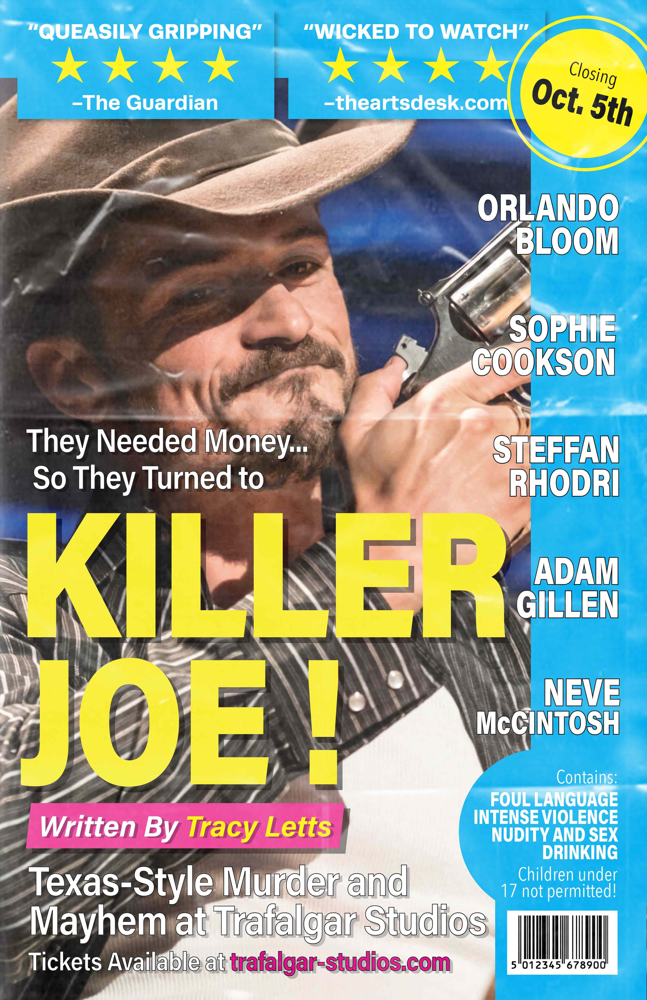

Posters for Killer Joe by Tracy Letts
posters for experimental typography (2020)
Two styles of a poster for Killer Joe, a dark-comedy thriller by Tracy Letts. The play centers around an attempt at hiring a hitman, and explores the themes of entertainment and the American fascination with violence.
The specific casting is from a production in 2019.

DETAILS
11X17, printed on recycled drawing paper